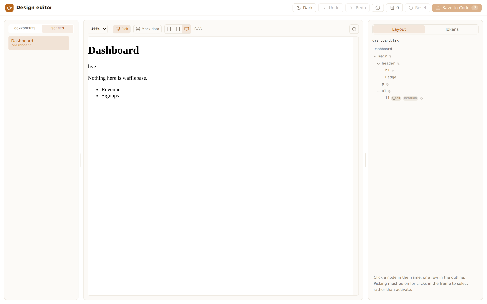

Design-to-Code 도구 개발
UI 유지 · 보수 워크플로우에서 코드를 유일한 진실 원천(SSOT)로 설정하고,
사용자가 화면에서 가리킨 것이 실제 소스 코드에 도달하기까지의 거리를 줄이는 파이프라인 설계.
프로젝트 목표
Building an agent-based pipeline
that replaces Figma with code as the Single Source of Truth
and allows humans to visually correct AI-rendered UI in a sandbox
Figma를 대체하여 코드를 유일한 진실 원천(SSOT)으로 삼고,
AI가 렌더링한 UI를 사람이 샌드박스에서 시각적으로 교정하는 에이전트 기반 파이프라인 구축
같은 병목이 두 곳에 있었다
값 하나를 바꾸는 데 필요한 것
스크린샷, 티켓, 개발자의 일정, PR. 관찰한 사람과 고치는 사람이 다르다. 디자이너가 호버 상태를 고쳐놓아도 그걸 넘길 방법이 없다.
이슈 트래커는 보고자에게 번역을 요구한다
재현 절차, 파일 위치, 라벨. 번역 비용이 관찰 비용보다 크다. 그래서 대부분의 관찰은 아예 보고되지 않고, 보고된 것은 맥락이 사라진 뒤에 도착한다.
두 경우 모두, 막혀 있는 것은 도구가 아니라 관찰과 코드 사이의 번역이다.
사람은 좌표와 판단을 제공하고,
도구와 에이전트가 번역·검증·조립을 맡는다.
어디를 말하는가. 클릭 한 번, 드래그 한 번.
이게 맞나. 보낼 것인가. 사람이 승인하지 않은 것은 나가지 않는다.
파일 경로, AST 노드, 커밋, PR. 사람이 쓰지 않는 부분 전부.
디자인 에디터 — 실제 화면을 열어 실제 소스를 고친다
- 앱의 실제 라우트를 실제 컴포넌트 소스로 렌더링한다. 목업이 아니라, 커밋된 코드가 하는 일을 본다.
- 클릭한 노드는 그 파일의 그 JSX 노드다. 클래스·간격·토큰을 바꾸면 미리보기가 즉시 따라온다.
- 저장하면 내 워킹 트리의
.tsx와 토큰 소스에 쓴다. 리뷰 화면은git diff다.

dashboard.tsx의 노드 트리와 자기 토큰 어휘를 읽고 있다.그 전에 — 프로토타입이 먼저 답을 냈다
시작은 feat/design-system 브랜치의 프로토타입이었다. 테스트는 0개였고, 목적도 하나뿐이었다 — 이게 되기는 하나? 아래 두 데모가 그 답이다.
컴포넌트 에디터 — 컴포넌트 하나를 격리해 두고 변형과 상태를 바꿔가며 토큰을 편집한다.
youtu.be/UGAsmT8ST4I
씬 에디터 — 실제 라우트 한 장을 통째로 띄우고, 클릭한 노드를 소스의 노드로 되짚는다.
youtu.be/wp8xlzO-klA
구조 — 브리지 하나, 뮤테이터 하나, 문서 두 개
?wbFrame= 스탬핑.node_modules/.cache/로. 소스 옆에는 아무것도 남기지 않는다.셸과 프레임을 서로 다른 문서로 나눈 것이 이 구조의 중심입니다.
패널은 우리 CSS로, 심사 대상은 그들의 CSS로 그려져야 하기 때문입니다.
호스팅을 버렸다
레포 URL을 올리면 우리가 띄운다
우리 인프라가 dev 서버를 돌리고, 에이전트가 고치고, 우리가 PR을 연다.
개발자 자기 머신의 dev 전용 Vite 플러그인
편집은 자기 워킹 트리에 떨어진다. git diff가 리뷰 화면이고, 최후의 undo다.
- 엔진의 모든 핵심 장치가 소스 트리가 dev 서버와 같은 파일시스템에 있다는 것을 전제한다 — 소스를 읽고 쓰는 미들웨어, 파일 경로 기반 모듈 id, 쓰기 후 HMR 푸시, 두 번째 HTML 진입점.
- 그걸 남의 레포에 대해 돌리려면 남의 코드를 체크아웃하고 install해서 실행해야 한다 — 임의 코드 실행, 멀티테넌트, 콜드 스타트, npm 공급망 노출. 그건 별도의 제품이지 기능이 아니다.
패키지를 둘로 쪼갰다
| 패키지 | 배포 | 내용 |
|---|---|---|
| @wafflebase/design-editor | 공개 | Vite 플러그인, AST 뮤테이터, 브리지 프로토콜, 에디터 셸 |
| packages/design-sandbox | private | wafflebase 전용: 씬 매니페스트, providers, fixtures, 캔버스 씬, 우리 토큰 어댑터 |
양쪽이 한 패키지 안에 있는 한, “남의 레포에서 되나?”는 눈으로 훑어야만 답할 수 있다. 그리고 실제로 결합 목록을 다시 검증했을 때 2건은 엉뚱한 곳을 가리키고 있었고 5건은 아예 빠져 있었다.
- 기계적 테스트: 배포되는 패키지는
@wafflebase/*의존성이 0이다. 방향이 뒤집히면 소비자의pnpm install이 깨진다 — 리뷰어의 판단이 필요 없다.
디버그 리포터 — 한 단축키, 한 번의 조준, 한 문장
c 캡처 / r 리전 → 한 문장. 여러 개 모은다.v 리뷰 패널 → 한 번에 넘김.보고자는 파일 경로도, 재현 절차도, 라벨도 쓰지 않는다. 문장이 곧 명세이고, 그 문장은 나중에 커밋 메시지의 “왜”로 그대로 들어간다.
버그만 다루지 않는다. 항목의 종류는 간격·색·토큰·문구·접근성·작은 어포던스·구조·로직 여덟 가지이고, 명백한 버그는 그중 하나다. “뭔가 이상한데”가 전부 같은 입구로 들어오는 것이 이 도구의 요점이다 — 이건 버그는 아닌데 하고 손을 내리는 지점이 없어야 하니까.
써보는 법 — 두 명령과 한 단축키
pnpm design
→ localhost:5173/__design-editor/
→ 편집 → Save to Code
pnpm design-pr
필요한 것: Node 22+, git, 커밋에 쓸 이름과 주소. pnpm·Docker·DB·백엔드 전부 불필요 — 씬이 fixture로 자기 데이터를 답하기 때문에, wafflebase에서 단독 실행되는 유일한 부분이다.
pnpm --filter @wafflebase/frontend dev
→ /harness/hunt?surface=sheet
→ Mod+Shift+Y → c → 한 문장
→ v → Hand over
드래프팅 키가 없으면 초안 없이 내 문장 그대로 넘어간다 — 항목당 PR 1개. 기능이 멈추지 않는다.
이어지는 실습 세션에서 이 두 흐름을 각자 환경에서 끝까지 한 번씩 돌려본다. 별도의 튜토리얼 문서를 따라가면 된다.
기대하는 결과, 그리고 남은 것
기대
- 디자인 변경의 왕복이 티켓 → 일정 → PR에서 클릭 → 저장 → PR로.
- 관찰이 싸지면 보고 수가 늘고, 늘어난 보고가 회귀 레인을 채운다.
- 둘 다 wafflebase 전용이 아니다 — 플러그인 하나, 패키지 하나. 다른 프로젝트에서 실제로 돌려봤다.
정직하게, 남은 것
- npm 미배포 — tarball이나 workspace로 설치한다.
- 에이전트 편집 루프는 미구현. 그 자리를 디버그 리포터가 대신하고 있다.
- 포크 PR은 자동 수정 루프에 못 들어간다 — 외부 기여자는 이슈에서 끝난다. 결정이 필요한 실제 구멍이다.
- 배포 환경 리포팅(SP2)은 의도적으로 미일정. 스크린샷에 남의 문서가 담기는 순간 리스크 프로필이 달라진다.
- 설정 절벽: 씬 매니페스트 + providers + fixtures 저작. 낯선 앱에서 1시간이 넘으면 설정 표면을 재설계한다는 것이 기준선이다.
- 이름이 아직 안 맞는다.
debug-report는 대부분의 제품에서 “진단 덤프”로 읽히고,bug-report는 위의 여덟 종류 중 일곱을 이름 밖으로 민다. 의견 받습니다.
설계 문서: docs/design/design-editor/ (시작점은 design-editor-local-plugin.md) · docs/design/debug-report.md · 운영자 가이드 design-editor-running.md